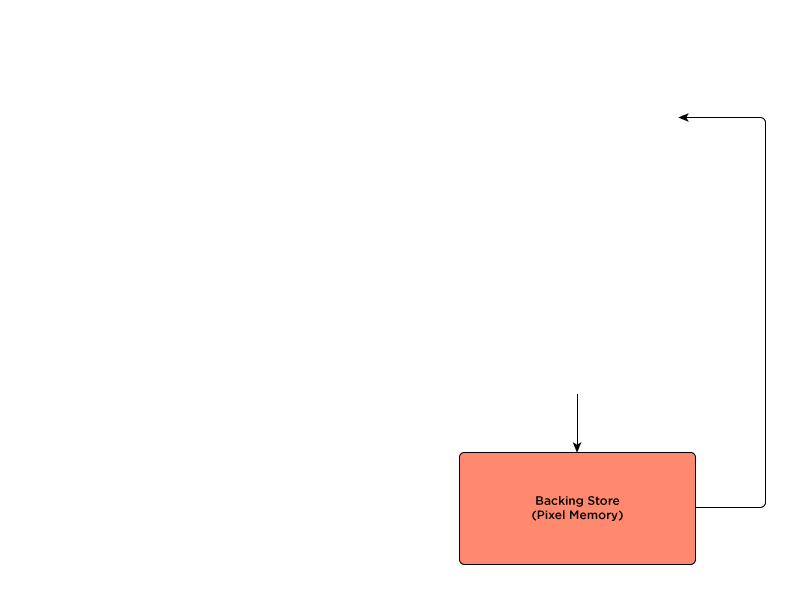
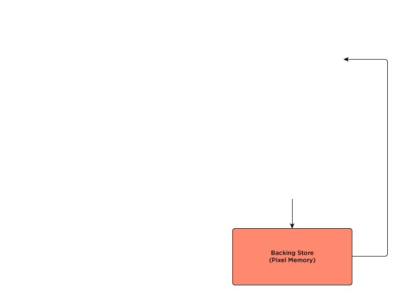

Pixel Club Presents:
2D Graphics and You!
Hello Canvas
<canvas> is an HTML element which can be used to draw graphics using JavaScript
Context
- 2D Context for CPU
- WebGL Context for GPU
But what's realllllly going on?
 

Make it
Access it
var canvas = document.getElementById('tutorial');
var ctx = canvas.getContext('2d');
Setting Size
Setting size can be done via JavaScript or CSS.
Simple enough, but can be a bit tricky.
Canvas Drawing API
The drawing API exposes all of the commands that you'd need to make 2D graphics. All based on the following primitives:
- rectangles and arcs
- paths
- images
- text
- ... that's about it
Drawing dynamic or custom shapes can be tedious.
Enter PIXI JS

Draw shapes with PIXI
PIXI makes it easier to draw objects and place them on stage.
Let's animate this stuff
Animation basics
Things are more fun when they move.
RequestAnimationFrame()
window.requestAnimationFrame( callback );
basic animation example
Workshop time
- Update your repo
- cd pixi-kaleidoscope
- npm install
- gulp